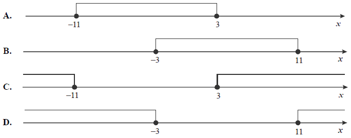
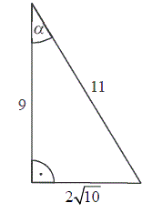
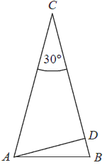
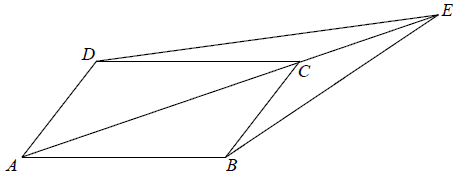

Matura 2012 sierpień
Długość boku kwadratu \(k_2\) jest o \(10\%\) większa od długości boku kwadratu
\(k_1\). Wówczas pole kwadratu \(k_2\) jest większe od pola kwadratu \(k_1\)
A.o \( 10\% \)
B.o \( 110\% \)
C.o \( 21\% \)
D.o \( 121\% \)
C
Iloczyn \(9^{-5}\cdot 3^8\) jest równy
A.\( 3^{-4} \)
B.\( 3^{-9} \)
C.\( 9^{-1} \)
D.\( 9^{-9} \)
C
Liczba \(\log_{3}27-\log_{3}1\) jest równa
A.\( 0 \)
B.\( 1 \)
C.\( 2 \)
D.\( 3 \)
D
Liczba \((2-3\sqrt{2})^2\) jest równa
A.\( -14 \)
B.\( 22 \)
C.\( -14-12\sqrt{2} \)
D.\( 22-12\sqrt{2} \)
D
Liczba \((−2)\) jest miejscem zerowym funkcji liniowej \(f(x)=mx+2\). Wtedy
A.\( m=3 \)
B.\( m=1 \)
C.\( m=-2 \)
D.\( m=-4 \)
B
Wskaż rysunek, na którym jest przedstawiony zbiór rozwiązań nierówności \(|x + 4|
\le 7\). 
A
Dana jest parabola o równaniu \(y=x^2+8x-14\). Pierwsza
współrzędna wierzchołka tej paraboli jest równa
A.\( x=-8 \)
B.\( x=-4 \)
C.\( x=4 \)
D.\( x=8 \)
B
Wskaż fragment wykresu funkcji kwadratowej, której zbiorem wartości jest \(\langle
-2,+\infty )\). 
B
Zbiorem rozwiązań nierówności \(x(x+6)\lt 0\) jest
A.\( (-6,0) \)
B.\( (0,6) \)
C.\( (-\infty ,-6)\cup (0,+\infty ) \)
D.\( (-\infty ,0)\cup (6,+\infty ) \)
A
Wielomian \(W(x)=x^6+x^3-2\) jest równy iloczynowi
A.\( (x^3+1)(x^2-2) \)
B.\( (x^3-1)(x^3+2) \)
C.\( (x^2+2)(x^4-1) \)
D.\( (x^4-2)(x+1) \)
B
Równanie \(\frac{(x+3)(x-2)}{(x-3)(x+2)}=0\) ma
A.dokładnie jedno rozwiązanie
B.dokładnie dwa rozwiązania
C.dokładnie trzy rozwiązania
D.dokładnie cztery rozwiązania
B
Dany jest ciąg \((a_n)\) określony wzorem \(a_n=\frac{n}{(-2)^n}\) dla \(n\ge 1\).
Wówczas
A.\( a_3=\frac{1}{2} \)
B.\( a_3=-\frac{1}{2} \)
C.\( a_3=\frac{3}{8} \)
D.\( a_3=-\frac{3}{8} \)
D
W ciągu geometrycznym \((a_n)\) dane są: \(a_1=36\), \(a_2=18\). Wtedy
A.\( a_4=-18 \)
B.\( a_4=0 \)
C.\( a_4=4{,}5 \)
D.\( a_4=144 \)
C
Kąt \(\alpha \) jest ostry i \(\sin \alpha =\frac{7}{13}\). Wtedy
\(\operatorname{tg} \alpha \) jest równy
A.\( \frac{7}{6} \)
B.\( \frac{7\cdot 13}{120} \)
C.\( \frac{7}{\sqrt{120}} \)
D.\( \frac{7}{13\sqrt{120}} \)
C
W trójkącie prostokątnym dane są długości boków (zobacz rysunek). Wtedy 
A.\( \cos \alpha = \frac{9}{11}\)
B.\( \sin \alpha = \frac{9}{11}\)
C.\( \sin \alpha = \frac{11}{2\sqrt{10}} \)
D.\( \cos \alpha = \frac{2\sqrt{10}}{11} \)
A
Przekątna \(AC\) prostokąta \(ABCD\) ma długość \(14\). Bok \(AB\) tego prostokąta
ma długość \(6\). Długość boku \(BC\) jest równa
A.\( 8 \)
B.\( 4\sqrt{10} \)
C.\( 2\sqrt{58} \)
D.\( 10 \)
B
Punkty \(A\), \(B\) i \(C\) leżą na okręgu o środku \(S\) (zobacz rysunek). Miara
zaznaczonego kąta wpisanego \(ACB\) jest równa 
A.\( 65^\circ \)
B.\( 100^\circ \)
C.\( 115^\circ \)
D.\( 130^\circ \)
C
Długość boku trójkąta równobocznego jest równa \(24\sqrt{3}\). Promień okręgu
wpisanego w ten trójkąt jest równy
A.\( 36 \)
B.\( 18 \)
C.\( 12 \)
D.\( 6 \)
C
Wskaż równanie prostej przechodzącej przez początek układu współrzędnych i
prostopadłej do prostej o równaniu \(y=-\frac{1}{3}x+2\).
A.\( y=3x \)
B.\( y=-3x \)
C.\( y=3x+2 \)
D.\( y=\frac{1}{3}x+2 \)
A
Punkty \(B = (−2, 4)\) i \(C = (5, 1)\) są dwoma
sąsiednimi wierzchołkami kwadratu \(ABCD\). Pole tego kwadratu jest równe
A.\( 74 \)
B.\( 58 \)
C.\( 40 \)
D.\( 29 \)
B
Dany jest okrąg o równaniu \((x+4)^2+(y-6)^2=100\) .
Środek tego okręgu ma współrzędne
A.\( (-4,-6) \)
B.\( (4,6) \)
C.\( (4,-6) \)
D.\( (-4,6) \)
D
Objętość sześcianu jest równa \(64\). Pole powierzchni całkowitej tego sześcianu
jest równe
A.\( 512 \)
B.\( 384 \)
C.\( 96 \)
D.\( 16 \)
C
Przekrój osiowy stożka jest trójkątem równobocznym o boku \(a\). Objętość tego
stożka wyraża się wzorem
A.\( \frac{\sqrt{3}}{6}\pi a^3 \)
B.\( \frac{\sqrt{3}}{8}\pi a^3 \)
C.\( \frac{\sqrt{3}}{12}\pi a^3 \)
D.\( \frac{\sqrt{3}}{24}\pi a^3 \)
D
Pewna firma zatrudnia \(6\) osób. Dyrektor zarabia \(8000\) zł, a pensje
pozostałych pracowników są równe: \(2000\) zł, \(2800\) zł, \(3400\) zł,
\(3600\) zł, \(4200\) zł. Mediana zarobków tych \(6\) osób jest równa
A.\( 3400 \) zł
B.\( 3500 \) zł
C.\( 6000 \) zł
D.\( 7000 \) zł
B
Ze zbioru \(\{1, 2, 3, 4, 5, 6, 7, 8, 9, 10, 11, 12, 13, 14,
15\}\) wybieramy losowo jedną liczbę. Niech \(p\) oznacza prawdopodobieństwo
otrzymania liczby podzielnej przez \(4\). Wówczas
A.\( p\lt \frac{1}{5} \)
B.\( p=\frac{1}{5} \)
C.\( p=\frac{1}{4} \)
D.\( p>\frac{1}{4} \)
B
Rozwiąż nierówność \(x^2-8x+7\ge 0\).
\(x\in (-\infty ;1\rangle \cup \langle 7;+\infty )\)
Rozwiąż równanie \(x^3-6x^2-9x+54=0\).
\(x=-3\), \(x=3\), \(x=6\)
Pierwszy wyraz ciągu arytmetycznego jest równy \(3\), czwarty wyraz tego ciągu jest
równy \(15\). Oblicz sumę sześciu początkowych wyrazów tego ciągu.
\(78\)
W trójkącie równoramiennym \(ABC\) dane są \(|AC| = |BC| = 6\) i \(|\sphericalangle ACB|=30^\circ \) (zobacz rysunek). Oblicz wysokość
\(AD\) trójkąta opuszczoną z wierzchołka \(A\) na bok \(BC\). 
\(h=3\)
Dany jest równoległobok \(ABCD\). Na przedłużeniu przekątnej \(AC\) wybrano punkt
\(E\) tak, że \(|CE|=\frac{1}{2}|AC|\). Uzasadnij, że pole równoległoboku \(ABCD\) jest cztery razy
większe od pola trójkąta \(DCE\). 
Wykaż, że jeżeli \(c\lt 0\), to trójmian kwadratowy \(y=x^2+bx+c\) ma dwa różne miejsca zerowe.
Dany jest trójkąt równoramienny \(ABC\), w którym \(|AC| = |BC|\) oraz \(A = (2,
1)\) i \(C = (1, 9)\). Podstawa \(AB\) tego trójkąta jest zawarta w prostej \(y=\frac{1}{2}x\).
Oblicz współrzędne wierzchołka \(B\).
\(B=\left( \frac{34}{5}, \frac{34}{10} \right)\)
W ostrosłupie prawidłowym czworokątnym \(ABCDS\) o podstawie \(ABCD\) i wierzchołku
\(S\) trójkąt \(ACS\) jest równoboczny i ma bok długości \(8\). Oblicz sinus kąta nachylenia ściany
bocznej do płaszczyzny podstawy tego ostrosłupa (zobacz rysunek). 
\(\sin \alpha =\frac{\sqrt{42}}{7}\)
Kolarz pokonał trasę \(114\) km. Gdyby jechał ze średnią prędkością mniejszą o
\(9{,}5\) km/h, to pokonałby tę trasę w czasie o \(2\) godziny dłuższym. Oblicz, z jaką średnią
prędkością jechał ten kolarz.
\(v=28{,}5\) km/h